Semi-detached house2 bedrooms
£180,000Offers over
14 Dunbar Terrace, Dundee
Area to confirm
Approx. 2.9 miles · 57 min walk from Tip Top
Listed 22 October 2026 · Axis Property
Original agent page unavailable; portal listing linked.
Daily property watch
Homes for sale · 2–3 bedrooms · Up to £270,000
Updated 23 October 2026 · 3 new · 136 in the archive
Area to confirm
Approx. 2.9 miles · 57 min walk from Tip Top
Listed 22 October 2026 · Axis Property
Original agent page unavailable; portal listing linked.
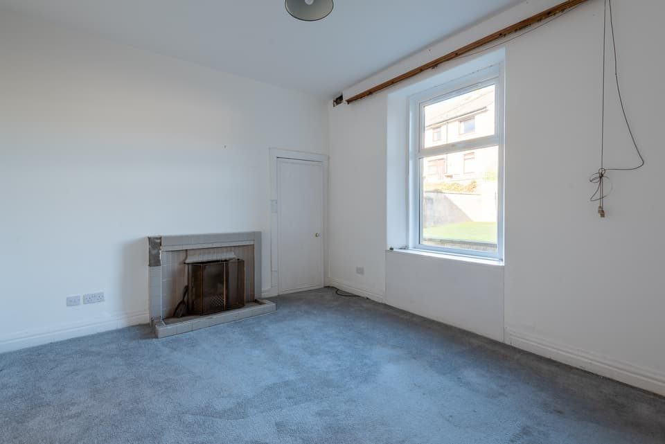
Area to confirm
Walking distance unavailable
First seen 23 October 2026; listing date unavailable · Thorntons
Requires upgrading and modernisation; EPC E.
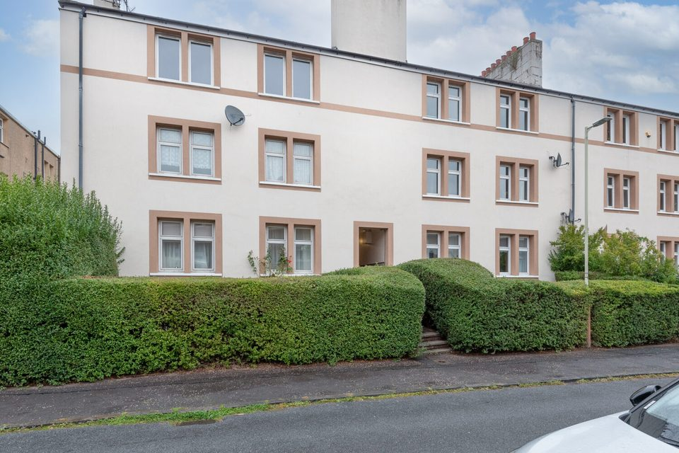
Area to confirm
Walking distance unavailable
First seen 23 October 2026; listing date unavailable · MML Law
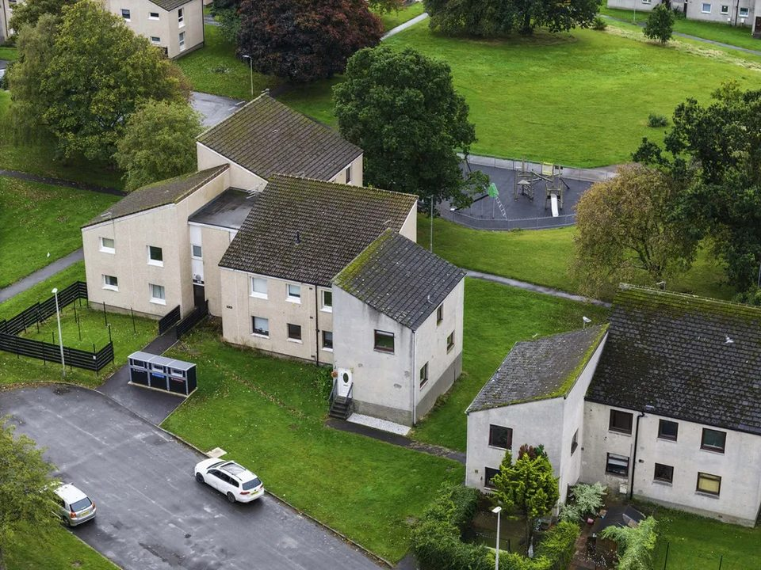
Menzieshill
Approx. 2.7 miles · 54 min walk from Tip Top
Listed 21 October 2026 · McIntyre Properties
Scope for improvements and cosmetic updating. Original listing date not independently verified; portal currently says added yesterday.
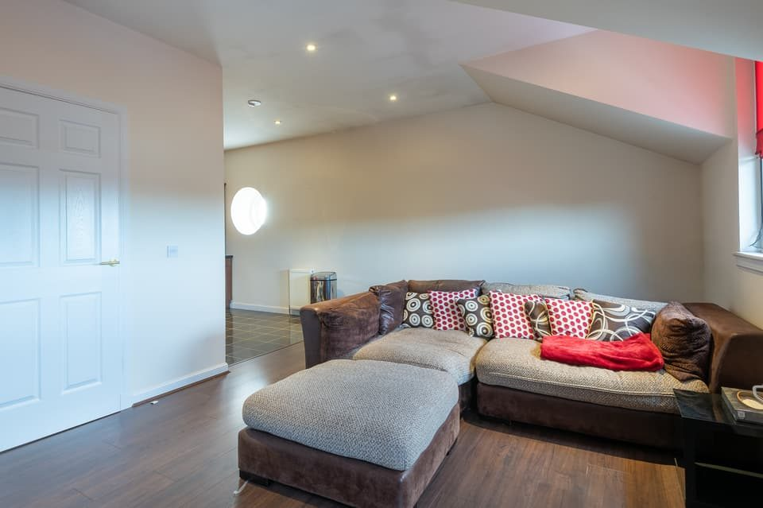
Area to confirm
Walking distance unavailable
First seen 22 October 2026; listing date unavailable · Thorntons
Factoring fees apply; converted mill with lift and allocated parking. First discovered today; original listing date unavailable.
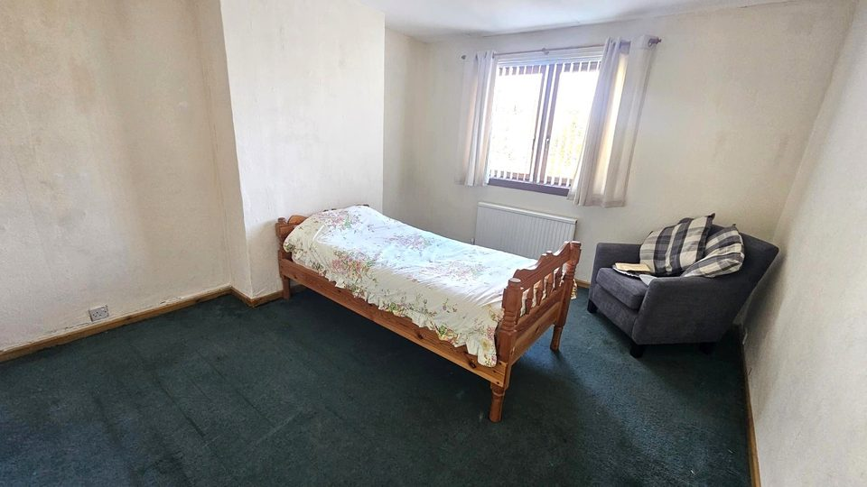
Dryburgh
Walking distance unavailable
First seen 22 October 2026; listing date unavailable · Campbell Boath
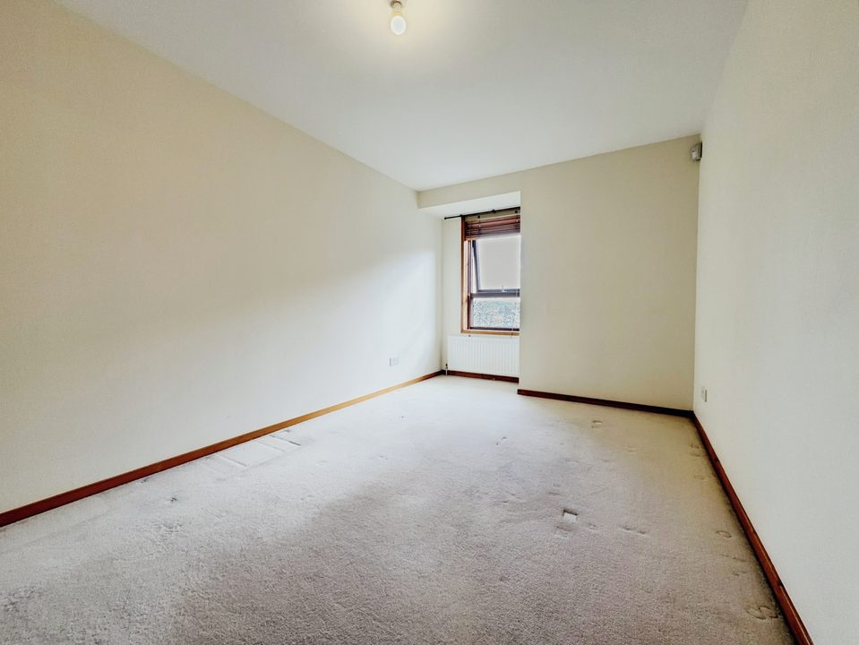
Area to confirm
Approx. 1.2 miles · 21 min walk from Tip Top
Listed 20 October 2026 · Northwood - Dundee
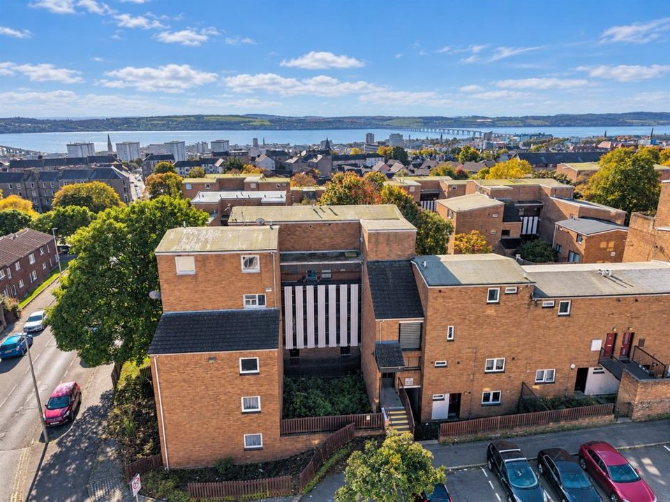
Area to confirm
Approx. 0.5 miles · 10 min walk from Tip Top
Listed 20 October 2026 · Rosie Fraser Real Estate
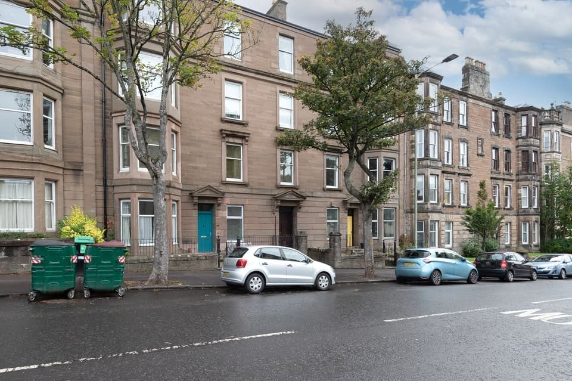
West End
Walking distance unavailable
First seen 21 October 2026; listing date unavailable · Thorntons
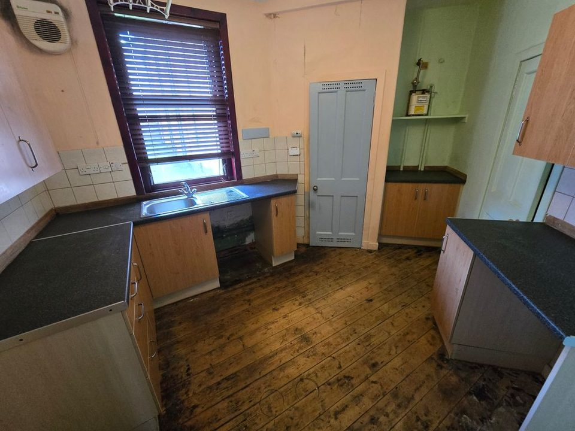
Lochee
Approx. 1.7 miles · 33 min walk from Tip Top
Listed 19 October 2026 · Auction House Scotland
Internal upgrading required. Roof and gutters replaced in early 2026, with vendor assuming that cost. Buyer premium/auction fee is 3.6% of purchase price, minimum £3,600 inclusive of VAT; at guide price the minimum applies.
Original agent page unavailable; portal listing linked.
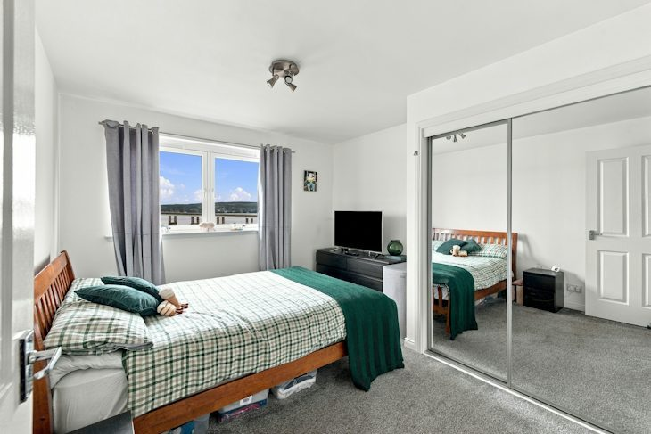
City centre
Approx. 1.6 miles · 32 min walk from Tip Top
First seen 20 October 2026; listing date unavailable · Gilson Gray
Approximate factoring charge £150 per month.
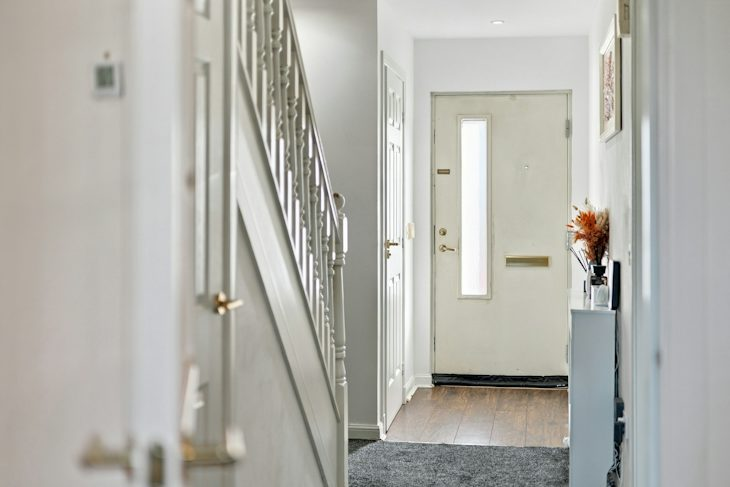
Area to confirm
Approx. 1.2 miles · 23 min walk from Tip Top
First seen 20 October 2026; listing date unavailable · Gilson Gray
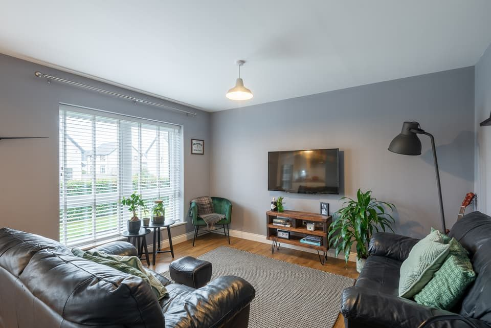
Area to confirm
Walking distance unavailable
First seen 20 October 2026; listing date unavailable · Thorntons Property
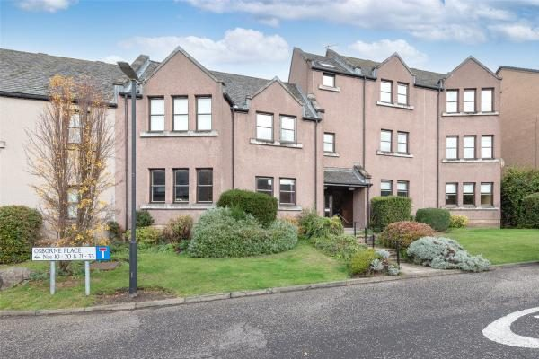
Area to confirm
Approx. 2.3 miles · 44 min walk from Tip Top
First seen 20 October 2026; listing date unavailable · Lindsays
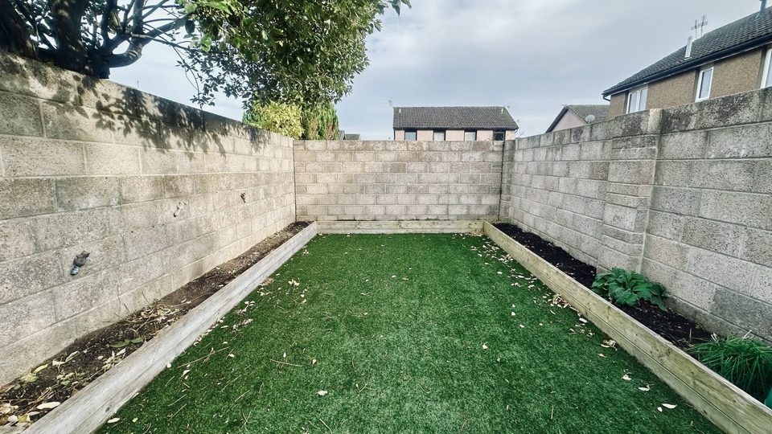
Area to confirm
Approx. 3.6 miles · 69 min walk from Tip Top
First seen 20 October 2026; listing date unavailable · The Chamber Practice
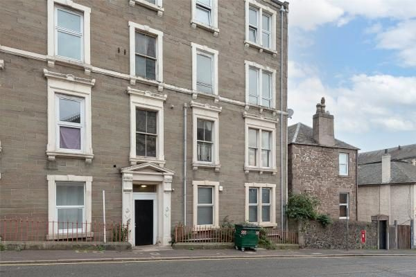
Area to confirm
Approx. 1.0 miles · 20 min walk from Tip Top
First seen 20 October 2026; listing date unavailable · Lindsays
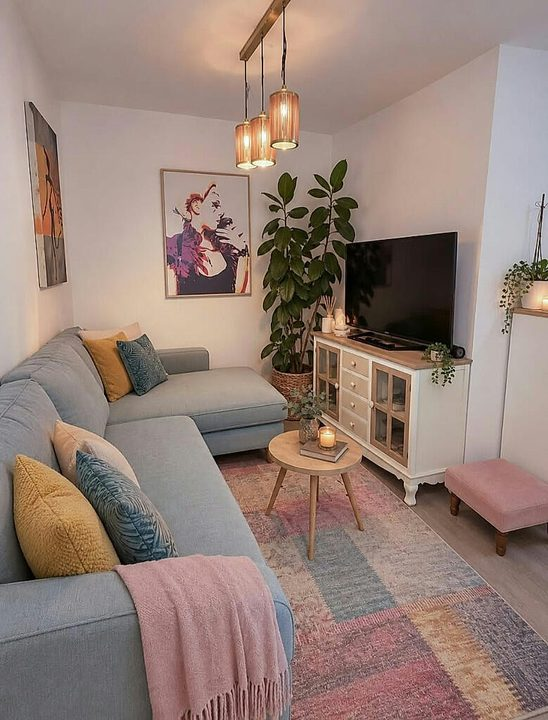
Area to confirm
Approx. 0.3 miles · 5 min walk from Tip Top
Listed 18 October 2026 · OFF AGENT
Original agent page unavailable; portal listing linked.
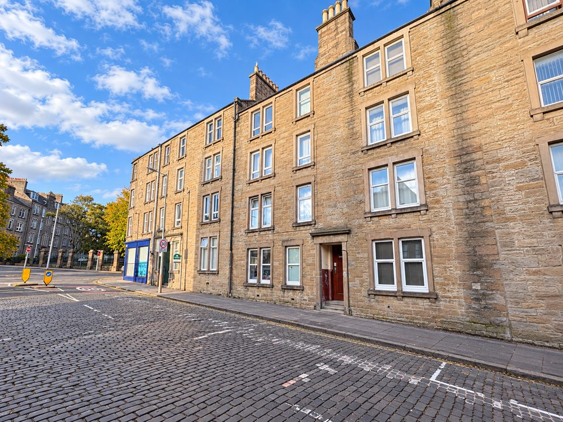
Area to confirm
Walking distance unavailable
Listed 16 October 2026 · Niven & Co
Advertised address omits the building and flat number; neither has been inferred.
Original agent page unavailable; portal listing linked.
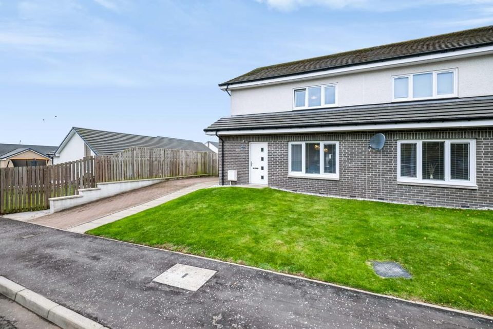
Area to confirm
Approx. 2.7 miles · 53 min walk from Tip Top
Listed 17 October 2026 · McCash Property Haus
Advertiser does not disclose a building number or full postcode; address retained exactly to the available specificity.
Original agent page unavailable; portal listing linked.
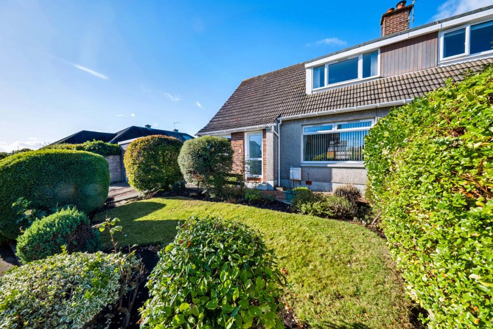
West Ferry / Broughty Ferry
Approx. 2.9 miles · 56 min walk from Tip Top
Listed 16 October 2026 · McIntyre Properties
House number and complete postcode are not disclosed in the verified listing text.